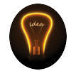

<!-- Left side column. contains the logo and sidebar -->
<aside class="main-sidebar">

<!-- sidebar: style can be found in sidebar.less -->
<section class="sidebar">
	<!-- Sidebar user panel (optional) -->
	<div class="user-panel">
		<div class="pull-left image">
			
		</div>
		<div class="pull-left info">
			<p>Prashant Waykar</p>
			<!-- Status -->
			<a href="#"><i class="fa fa-circle text-success"></i> Online</a>
		</div>
	</div>
	<!-- Sidebar Menu -->
	<ul class="sidebar-menu">
		<li class="header">Menu</li>
		<!-- Optionally, you can add icons to the links -->
		<li class="active"><a href="index.html"><i class="fa fa-link"></i>
				<span>Temperature</span></a></li>
		<li><a href="lights.html"><i class="fa fa-link"></i> <span>Lights</span></a></li>
	</ul>
	<!-- /.sidebar-menu -->
	</section>
<!-- /.sidebar -->
</aside>